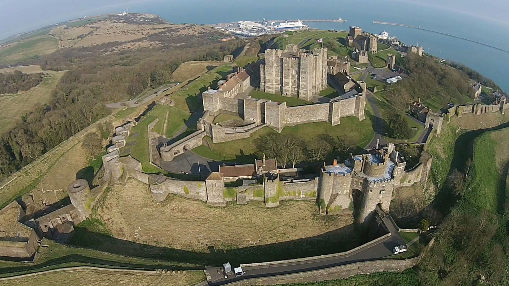
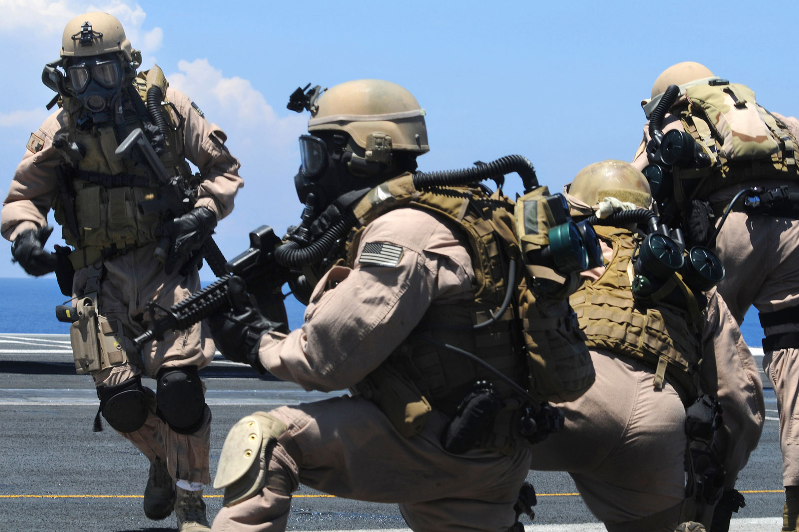

-

Pegasus Constellation
Hesiod's Theogonía: “Genealogies of the Greek Gods” composed c. 700 BC. Pegasus is one of the best-known creatures in Greek mythology. He is a winged divine stallion. Sired by Poseidon, in his role as horse-god, and foaled by the Gorgon Medusa.
-
Troy Rendition
The Trojan War was waged against the ancient city of Troy by the Greeks in modern day Hisarlik, Turkey, during the Bronze Age, c. 1260–1180 BC. The outcome was a Greek victory, and the destruction of the city Troy. The war is one of the most important events in Greek mythology and has been narrated through many works of Greek literature, most notably through Homer's Iliad. By the mid-19th century, both the war and the city were widely seen as mythological.
-
Troy Ruins
In 1868, German archaeologist Heinrich Schliemann met Frank Calvert, who convinced Schliemann that Troy was a real city at what is now Hissarlik in Turkey. Based on excavations conducted by Schliemann and others, this claim is now accepted by most scholars. Possible alternate outcomes could be a different view of the heroes who won the war and the quality of ruins from the Trojan Archeological site.
-

Dover Castle
Hundred Years' War: 1337 to 1453 AD. Location: France, England and Spain. Outcome: French victory, The Valois retained the throne of France except Calais. Possible alternate outcomes could be an English victory over France resulting in the English Rule over France.
-
King Henry II of France
Caroline War: 1369 to 1389 AD. Location: France. Outcome: French victory: Treaty of Bruges. Possible alternate outcomes could be an English victory over France resulting in English Rule and an English speaking France.
-
King Henry VII of England
Wars of the Roses: 1455 to 1487 AD. Location: England, Wales, Calais France. Outcome: The final victory went to a claimant of the Lancastrian party, Henry Tudor, Earl of Richmond, who defeated the last Yorkist king, Richard III, at the Battle of Bosworth Field. After assuming the throne Henry Tudor, Earl of Richmond was crowned as King Henry VII.
-

Modern Knights
Global War on Terrorism is a metaphor referring to the international military campaign that started after the September 11th, 2001 attacks on the United States. The United States gains the upper hand on Global War on Terrorism with the assasination of the leader of the 911 attacks Osama Bin Laden on May 2, 2011.
-
Flying Knights
Air Force Reserve Officer Training Corps Detachment 159 at the University of Central Florida in Orlando. Home of the “Flying Knights.”offers a challenging in-college program to develop quality leaders for the United States Air Force.
-

Golden Knights
UCF opened in 1968 as Florida Technological University, Founded in 1963 by the Florida Legislature, "Florida Tech" was renamed The University of Central Florida in 1978. Today UCF represents the ideals of diversity, equality and liberty. Possible alternate outcomes could be an oppressive dictatorship of Sharia law.